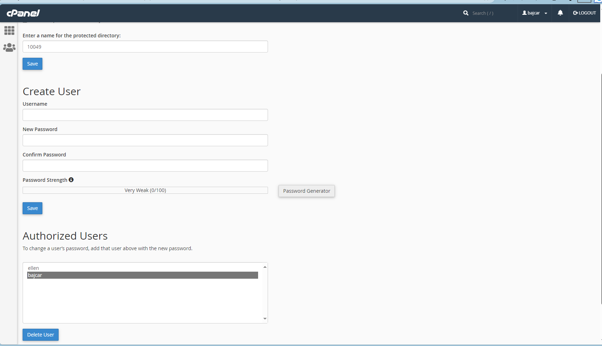

The suggested activities will be started and discussed in class. It is your responsibility to complete the activities by the next class and ask timely questions. Check out information about formative vs. summative evaluation, how to study and how to learn,...
Activity 1. Prepare working environment (Part 3)
Set up the server
- 1. Preparing server environment
-
- Download the FileZilla Client SFTP is a protocol to transfer files between client and server link to download FileZilla Client
- Obtain cPanel access to dev.fast.sheridanc.on.ca To request/reset password tech.fast.sheridanc.on.ca/ (Services > LAMP/Git). Information for Hostname, Web URL, cPanel URL, FileZilla setup, WinSCP setup, username and password info.
- 2. Once you have access to the server,
-
- use FileZilla to access your home directory on the server (will be demonstrated in the classroom). Navigate to the
public_htmldirectory and create the sub-tree in FIGURE 2 below. - use the cPanel (accessible through tech.fast.sheridanc.on.ca, where you requested your account above) to complete STEP 1 to STEP 5. READ through all the steps before you do any of the steps! This will help you anticipate any problems.
- Protect assignments directory: All assignments must be published and password-protected.
- STEP 1. Read through carefully: SYST10049 Setup Tasks: Protect Assignments with cPanel
- STEP 2. Using the File Manager in the cPanel, navigate to public_html directory, create the folder syst10049 using the +Folder menu item (see FIGURE 1).
FIGURE 1. +Folder is the second menu item from the left, in the top menu. 
- STEP 3. Navidate to the syst10049/assignments folder.
FIGURE 2. Sub-tree on the server 
- STEP 4. Complete the steps in the "SYST10049 Setup Tasks: Protect Assignments with cPanel" in STEP 1.
- STEP 5. If you make a mistake and protect the wrong folder:
- Navigate to the folder that you have protected by mistake (remember: to navigate, you click on the icons)
- Click on the text (name of the folder) that you want to unprotect.
- Scroll down to the bottom of the page. Under the heading "Authorized Users", select (click on username) and then click the "Delete User" button underneath.
FIGURE 3. How to remove authorized users 
- Publishing process to dev.fast.sheridanc.on.ca
FIGURE 4. Publishing process to dev.fast.sheridanc.on.ca 
- How do you upload your files to a web server? (MDN web docs)
- How do you make sure your website works properly? (MDN web docs) Test in your browser. HTTP statuses. Frequent errors. More things to check.
- use FileZilla to access your home directory on the server (will be demonstrated in the classroom). Navigate to the
Activity 2. Explore and study course material
Plan, design, and construct website
- Explore the tutorials. Create your own version of the examples you encounter.
-
- Dealing with files (MDN web docs)
Where should your website live on your computer? An aside on casing and spacing. What structure should your website have? File paths. - What are browser developer tools?(MDN web docs)
How to open the devtools in your browser. The Inspector: DOM explorer and CSS editor. - Document and website structure (MDN web docs)
- HTML for structuring content. HTML layout elements in more detail. (Information architecture: Information architecture, as applied to web design and development, is the practice of organizing the information, content, and functionality of a website so that it presents the best user experience it can, with information and services being easily usable and findable.)
- Basic sections of a document (header, navigation bar, main content, sidebar, footer)
Many web designers consider the navigation bar to be part of the header rather than an individual component, but that's not a requirement; in fact, some also argue that having the two separate is better for accessibility, as screen readers can read the two features better if they are separate.
we need to respect semantics and use the right element for the right job.
- article, section, aside, header, nav, footer, body, article, section; span, div; br, hr, p
- HTML basics (MDN web docs)
So what is HTML? • Anatomy of an HTML element • Nesting elements • Void (Empty) elements • Anatomy of an HTML document • Marking up text (Headings, Paragraphs, Lists) • Links
- Dealing with files (MDN web docs)
- 2.3. HTML Living Standard
-
- 4.2 Document metadata HEAD, TITLE, BASE, LINK, META, STYLE
- 4.3 Sections body, article, section, nav, aside, h1 - h6, hgroup, header, footer, address
- 4.4 Grouping content p, hr, pre, blockquote, ol, ul, menu, li, dl, dt, dd, figure, figcaption, main serach, div
- 4.5 Text-level semantics
- 4.6 Links
- 2.4. Testing for valid HTML and accessibility
-
- Testing for valid HTML with https://validator.w3.org/
- Testing for accessibility with WAVE Web Accessibility Evaluation Tools
- Accessibility tree Browser Accessibility Tree provides a representation of the document that is used by assistive devices like screen readers. Each node in the tree has the properties name, description, role and state.
3. Practice. Practice. Practice.
- 3.1. Create templates project
- Complete all steps.
- 3.2. Create week03 project
-
- Copy the templates project. Rename the copy
week03 - Rename the
template.htmltoindex.html. This will be the only page for this project. - Remove all markup in the BODY element. This page does not have a header and footer, main, and aside.
- Add content to your HTML file (un-marked). Copy and paste the text within the BODY element:
Textual content of the letter - Examine the image of the letter. Observe the content characteristics.
The final (original) rendering of the letter (including CSS in Phase II PE) - Compare to image of the letter as rendered without any CSS. Remember CSS is added only after the content is marked up with HTML5, with the objective of achieving semantic correctness, accessibility, well-formedness, and validity.
The rendering of the letter at the end of Phase I PE (without CSS) - Here is a suggested list of requirements. You can incorporate the requirements list in your document and use the TODO and DONE notation to keep track of your progress: Suggested documentation You can also read the original project on Marking up a letter on MDN -- ignore all references to CSS -- Addressor's contact information WILL NOT BE aligned on the right! (that will come later in PE Phase 2)
- Copy the templates project. Rename the copy